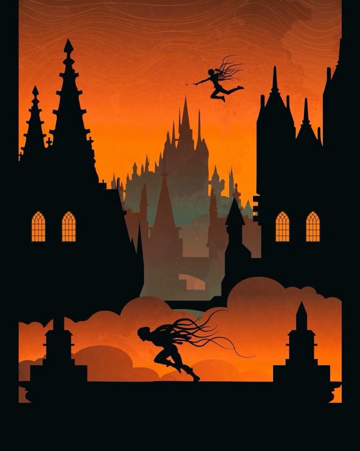

Mistborn
Es fantasía épica, pero no la típica de castillos brillantes y héroes perfectos. Acá el mundo está roto, cubierto de ceniza, y la magia tiene reglas claras que se sienten casi científicas. Mezcla revolución, intriga política y poderes únicos de una forma muy intensa y emocionante.